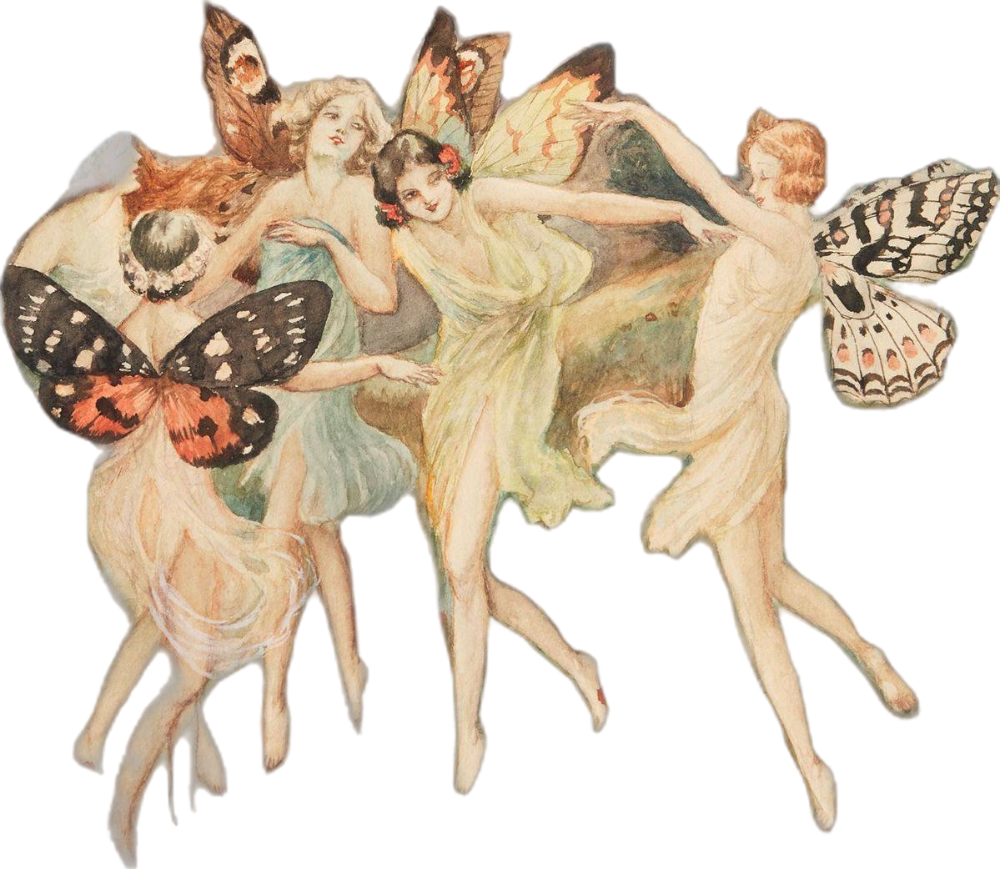
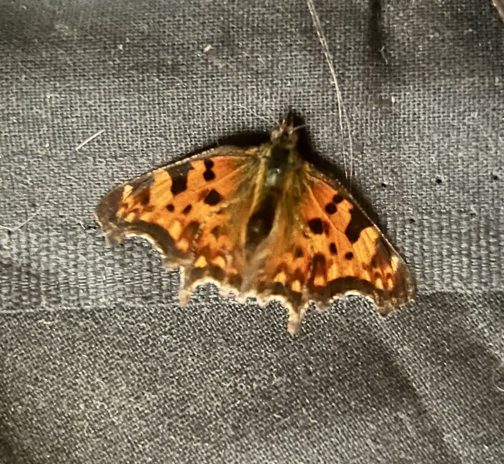

В стихии воздуха есть покрывающая шлейф-пленка. Скорее всего, это было известно и древним, но одна такая интуиция многое проясняет. Пленка эта заточена, как лезвие, и вместе с тем прозрачна, чуть мутновата два ее конца смыкаются в пупе земли. Метафорой здесь может послужить-с завязанное декольте посреди двух сферических чаш, которые, впрочем, зовутся ракушками, спиралевидные наутилусы, да и весь лунарный комплекс. Если вдруг птица, ласточка или воробей вьет гнездо под крышей, прямо над вашей головой, остерегайтесь полной луны, если вы не вполне готовы. Тонкость векторной направленности стрелы Амура эфирна а это, в свою очередь, говорит о птичьих яйцах, которые суть три столпа и подпорки всего проявленного, а именно не привычного сущего, т.е того, что не меняет своей твердости в связи со спекуляциями. В лучшем случае на вас готовится охота они, менады луны, закрутят вас в пленку, и от боли в ногах, не переставая танцевать, вы скользнете и расотождествитесь с собою, прогоняя себя от себя по оси двух нитей, уходящих в узел пупа земли. После вы, при должном усердии и с их помощью, возгоните свой пепел, оставшийся от вас и от души, и от тела, и от двойничьего, в сферу огня, то есть в ту сферу, где изначально и было ваше подлинное пребывание, устраняя тем самым дуализм влажного пути а после трансформации превратитесь в конденсат. Тогда, поймав себя в этих ухищрениях, вы увидите точку сечения, то есть вечного возвращения.


Бумага одного художника это не та бумага, свойственная другому. Прошу заметить, речь идет не о фактуре, бренде, плотности или цвете. Если вглядеться в кадр из кинофильма с участием Веры Холодной, можно сказать обывательским языком (языком университетской номенклатуры) жанровая специфика, свойственная тому времени, мелодраматически-ноктюрническая салонная резвость… Но ничего это ни о кадре, ни о фильме, ни о чем не говорит путаная навигация или… говоря точнее, трудности перевода одной географической карты на другую, иноразмерную, что, соответственно, заводит не совсем туда. Теперь поглядим иначе, достаточно кадра.. героиня, запыхавшись, растерянно-собранно, изнеможденно облокотилась пепельной головой о дерево. Ее вернувшийся после взгляда через плечо профиль отражает исчерпывающе всю специфику белого цвета как такового и не только, то есть его оксюморон and антиномичность, позитивную парадоксальность по ту сторону законов чистого разума, логики, рацио, логоса и т. д., т. е. чисто фонарно-патриархальных гаечных ключей. Ошибочно полагать, как это делал и Аристотель, и феноменологи, что цвет это акциденция, он всегда на чем-то, а как такового его нет, или, точнее, нечто может быть во что-то окрашено. Скорее верно так цвет - это уже что-то, неразрывная, тонкая, субстанциальная категория вне захвата, посему она и ускользает, и правильно делает. Белый это бумага, будь она например пожелтевшей она сочится, изнурительно жаждет ласки, пылает неустанной любовию / Белизна временно приняла форму волос, лица и платья, чтобы обнаружить себя.

Женское тело воздействует магически, золото притягивает безумие, а солнце сжигает дураков. Смерть кощея бессмертного спрятана на конце иглы, которая находится в яйце, яйцо - в утке, утка - в зайце, заяц закован в железный сундук, а сам сундук висит на ветвях векового дуба, растущего в тридевятом царстве, в тридесятом государстве, за тридевять земель на море на окияне, на острове Буяне. Хвосты, они же вывернутые электрические провода на столбах, внушительно убивают голубей. Это те птицы, отличные от ворон или чаек от долгого сидения на проводах голуби больше не могут садиться на здания для них все становится хвостом. Оттого они клюют именно в пол, и переезжают их из-за того, что они думают, будто этот электрический хвост их ветка и внизу. А хвост устроен по принципу циклов, которые в урбанистическом пространстве нарушены. Голуби чувствуют канализацию внизу, посему полагают (и верно) что там их дом, но машина переезжает их быстрее. Вороны гораздо умнее, а чайки или воробьи чаще под крышей, я их редкенько слышу там уже два яйца. Одного социального взаимодействия, сквознякового пролета меж мирами людей, достаточно на год уединения, дабы вновь нарастить скорлупу, ведь турбуленция мышц сжигает холодцовые спазмы.
Полное признание превосходства изначальной пелазгической космической ночи, сновидений, беспредельно-безбрежного, интуиции над рациональным во всех его проявлениях. Абсолютная власть космоцентризма и вечного возвращения. Тортола Валенсия, Belle Époque эпоха испанского декаданса, к сожалению, неизвестна сейчас. По сравнению с тем, что известно (а эта по преимуществу кабинетные, безопасные, гнусавые лектора, работающие на статус-кво) испанская прекрасная эпоха совершенно не переведена на русский и никак не освещена. Так, по сравнению с ней, хотя французский сплин имеет свое место, и было бы ошибочно просто сравнивать сообразно тому что лучше не говоря о том, что танцовщиц таких уже нет разве что предпринимательницы, а потенциальные поклонники сакрального служения «оперились» в прагматичных, рациональных…… к слову, не буду о вязком. Горячая кровь испанцев и испанок наиболее сорванно прошелестела хворостинкой. Трудно себе представить вообще возможность того, кто способен то ли застрелиться, то ли разориться. Это неразумно, наваждённо, глупо, нецелесообразно, неэкономно… да и вообще незаконно. Мир признаёт функционально-внешнее, наиболее узколобое проявление чего бы то ни было все тонкие миры отвергаются, тонкость вообще молниеносно купируется «трезвым» взглядом самого смотрящего. /- Ни разу еще не встречал я женщины, от которой хотел бы иметь детей, кроме той женщины, которую я люблю: ибо я люблю тебя, о Вечность! Ибо я люблю тебя, о Вечность!-/
В их волосах - оливковых - разорванные нити, В них пепел прерий, яд и терпкость темной соли. Смуглянками зовут их дети лисьи. Они ведут сквозь анфилады суеверий К триумфу высшей, запредельной боли.

В ленивой сонливости из обезвоженных кондиционеров плюются каплями голодного пота из резво вращающихся в полуденном салатово-резком зное страдающие вентиля. Они жадненько наползают друг на дружку, ревниво уворачиваясь обступая ветра, грохаются стеклянной дробью на алюминиевые головы карнизов, стремясь со-слоиться. Солнце, неразборчивое в своей щекотке, кажется <…им…> нависшей мельтешащей лампочкой; посмаркиваются ушами втулчатых труб, поэтому, когда я говорю в изморось, она же, оседая на разжиженной земле, эфирно вбирает в себя мои смыслы. Или снег таким образом можно заговорить, а потом он летит своей дорогой это более интенсивный контакт, у людей слишком много своего. Ноооет... Нооооет... Ноет бело-черствое покрывало на полевых лбах. Сними свои шпильно-красные туфли! Окинь бирюзовым ногтем окружающий мир за класс первый, а вот когда ты, деточка, увидишь гангрену знамен, завопи не стесняясь - «Я ЛЮБЛЮ СОВ, ЖУРАВЛЕЙ И ВОРОН!!!»

Чувствую добронравный надрыв Якоба Бёме есть в нем что-то притягательно-симпатическое. Если настолько глубоко, как я прожить те улицы, которых никогда не видел, но по которым мы с ним ходили, тот запах именно того несравнимого события времени, который именно там было, и парадоксальная отрешённость, и при этом всем защита дидактикой, при всём пучеглазый взгляд от разверзающегося нечто, что за неимением концептуального аппарата он не мог описать, а с виду на этой игре резких однотонных градиентов ремесленника, отца и дитя своего времени - Зоркоокай UNGRUND. Тот, кто по-настоящему идет влажным путем, не ищет результата трансформации, ни свидетельствующего духа самодовольно пологающимся на сухом пути, ведь свидетельствующего некому, да и незачем.. Само скольжение в ночи и есть единственная, если можно так выразиться актуальность целиком, без остатка и без страховки. Здесь требуеться оговорится, точнее... подчеркнуть, мир современных мужчин - уродливый и мелкий диктат гипертрофированного солнечного титанизма, посему, идя в ночи, требуется насколько возможно свести контакты с внешним миром (как сеткой смвслов к 0) а как с горизонтальной поверхностью - к зоологическому минимому..

Виделся мне дух вооруженной жрицы, идущей с вестями, какими-то кольцами; блистательные отпечатки на песке багровели опадающим внутренним ознобом, вот-вот маясь припасть обратно, а знойные дубы, хирея, склонили свои кроны…

Для содержательной герметической гигиены свой онтологический статус - статус себя - требуется хранить в тайне. Обнаружение оного для самого себя, его узнавание - уже внушительная честность. Но вот нераспространение его любому, каждому, всякому (близкому, далекому, родному, безродному) - внушительная доля // Имея характерную черту самостоятельно, непринужденно, кажется даже случайно, хрупко доводить себя самого до исступления, меланхоличной крайности, глубочайшего уничижения без упоения этим, дает интересную возможность быть неподвластным похожим влияниям извне, то есть в каком-то роде - определять, а значит - присваивать ценность.
Если всё обладает одинаковым онтологическим статусом, то им не обладает ничто. Точнее, начинает доминировать низшая из констант - животный страх исчезновения, сковывающий anima caelestis и anima mundi. Без души нет жизни как таковой, значит, здесь совершенно нечего делать - ни «здесь», ни «там», - но и не делать тоже нечего. Начиная с Гоббса и Спинозы, европейская мысль онтологизирует эго, превращая его в сущность человека. Если для Гоббса концепт исчерпывается чистым выживанием, то у Спинозы эго якобы подчинено активному разумному началу. На деле этот разум лишь функциональная заглушка, не несущая в себе никакого нового качества. Вся нынешняя «радикальная» мысль держится на безопасном, чисто теоретическом хипстерском восторге. Это философия сытости, взращённая в условиях невиданного комфорта, защищённая правовым государством и медициной. Без признания качественной иерархии бытия и уникальности духа эта радикал-философия неизбежно капитулирует перед банальным страхом смерти. Именно этот страх последние века два инфицирует культуру смерть мыслится как абсолютный рок, фатум, за которым следует ничто. И здесь закономерно включается локковская идея pursuit of happiness - культ индивидуального счастья, примитивного желание, пришедшего на смену подлинному, божественному энтузиазму (en theos), отражения макрокосма в микрокосме, к слову доступному и сейчас, но их выбор, пасовать… Оттого и тень от столба, что знает о столбе только как о тени на асфальте, не беря во внимание переливы его фонаря, окантовку и вертикаль знает о столбе ограничено как о препятствии для света, но слепо упускает о переливах фонаря, о самой природе излучения, эссенции, энергии и цвете. Всякий желающий счастья - материалист до мозга костей и живота. Даже если его убеждения и отличны, они в конечном итоге видятся для него в качестве счастья, точнее - его количестве индивидуального благополучия, состоятельности, успешности в калькуляции и сортировки который неотрывен от идеи прогресса, так как она в свою очередь фундаментальная онтологическая константа без которой счастья, экономики в ее современном понимании, образа жизни, мысли, отношений, взаимосвязей, планов на эфемерное будущее - нет. Противоположное количеству - состояние абсолютной безобъектности, чистое, беспричинное самоизлучение или же - Аллах, Уджуд (وجود). Но есть интересный нюанс, моя интуиция верна, следовательно она на что-то натолкнулась, не шла ли она по фракталу, точнее неоплатонической сфере, где жилы клена сумрачно напоминают свои корни? Посему исключительно поэзия в широком смысле слова, и занимает свое главенствующее место в области гносеологии.
Общение с людьми обыкновенными, приносит лишь глухое, тоскливое вязкое страдание. Их умы совершенно чужды ласке вдохновенного взгляда, глазам пронзительных губ, буранам чёрных страстей, заснувшим поперёк горла наваждениям, спонтанным проискам. Но попытка сблизиться с творцами художниками, музыкантами или поэтами оборачивается ещё более жестоким разочарованием. Вторые слишком деспотичны и безраздельно заняты собой. Они, точно так же как я, ревниво прячутся в собственных тихих омутах, из-за чего любая близость с ними превращается в обоюдную, мучительную несвободу, ощущение, что вот-вот что-то надломится, куда-то вспорхнёт и, разуверенное в своих силах, поникнет, раскатится, счешет нос о лужу!
Разъедай! Разъедай! - вдохновленное тело. Разъедай до излишков волос, Убегая коснись панцирями бело-саженцев опухающих Роз! На брусчатке мощенной грибами, на пруду - заволоченном рвами Отпускала Цирцея зубо-скаленных Львов!
Заметил, что драма неординарных эзотерических, но всё-таки мировых, а значит, обобщающих доктрин (например, кашмирского шиваизма) в том, что либо из-за незнания языка и отсутствия упоительного погружения в культуру они не раскрываются полно, либо происходит и то, и другое. Это другое является в виде усреднения до общего знаменателя для всех интересующихся. Меня терзает, что пропадает само жало из за разных росписях на страницах учебников, монографий и тому подобного оттого-то и важен личный миф, и его завороженное созидание
Душа согласно неоплатонизму - это цыганка, душа это - танцовщица, Кармен, ОНА - длинноногая чужестранка. Душа - это сапоги скороходы, душа - это ковер самолет! Душа - скатерть-самобранка, разглаженная на кипящих борщах, ждущая, что бедная Лиза схватит ее и пойдет смачивать своими слезами, обхватив двумя порозовевшими бедрами, краснеющими на послеобеденном солнце сквозь вой тонкой мухи садящийся на искры побелки пастозно сосульчато свисающий подокойнник!

Вместе с желанием кому-то что-то доказать пропало смежное, в симбиозе с первым, перманентно-фоновое состояние ожесточённой гневливости, наконец 4-летнее не менее мягко говоря, ожесточённое затяжное Нигредо прошло.
Есть существа, заставляющие всем своим нахождением рядом, либо поодаль, в принципе, в радиусе нашего взгляда даже, быть может, знакомые, либо случайно, за беседой встретившиеся заставляющие тебя сжаться, сузить горизонт, уподобиться на время, похереть. Какое-то неуютное бдение, это оттенки негативного, асимпатического резонанса, когда ты ударяешься внутрь искусственным тупиком, когда чувствуешь себя запятнанным, каким-то не таким, спазмированным, не собой. Дело даже не в них как таковых, но дело в них для тебя и обязательно настоящее желание помыться, убрать всю растерянность, претенциозное мещанство сморчками которым они тебя заражают, какую-то даже не робость, а… неуклюжесть, и ты всасываешься в эти поры фальши по первой. Что перед носом потрясли с жалобным лицом пластиковой чашечкой, что удивили фигой, помешкали, высосали внимание… Даже трудно окончательно охарактеризовать … тля, затхлость антипатии это. Другое дело это возникновение поистине вдохновляющих, разрывающих от радости резонансов, как будто пена бурлящих источников ковровой лианой расстилается, и ты нежишься, творишь, искреннее ЕСТЬ!, настолько полон, как дитя, незаинтересован ни в чём, что вне. Пожалуй, такие резонансы создает литература, определенные люди вдали быть может, умершие, либо стремящиеся перейти на другую сторону, туда. Туда, откуда блеет их пятикрылая сова, жилистой шеей трескает вены жирафьи. Это люди ПРИСУТСТВИЯ, люди эвристическо-витального катализированния, вызывающие словом к бытию, перечислять я их не стану - незачем) Они одарены Мнемозиной, поцелованы её дочерьми, её нехотливыми дочерьми незамечающими, неуступными…. (Ревнивыми?))) Ооооо…. избавь меня от первых. Почему я забываю шляпу? Отчего самонадеянно беру пинцет? Или оттого что кора смолиста, или оттого что…..?! Помылся в мёде? Впрочем адепту, прикасающемуся к сакральному желательно направлять свои бушующие внутренние проекции, страсти и архетипы на символические системы, а не баламутить меня своим ментальным калом
Знаки и символы правят миром, случайностей не бывает, уже вторая за пару дней, то-ли металловидка-гамма то-ли углокрыльница с-белое, впрочем…. водичку с сахаром налил ей, еще так трясется забавно, как шатёр.

Она просто залетела и ушла… Как уже упоминал вторая, вроде, за неделю. Потом носилась под полом, под креслом, на ковре... У неё какие-то проблемы взлететь были «печать на крыле», как пел Башлачёв. Я рыдаю и от песни, и от ухода бабочки, от второго еще больше как никогда. Она ещё дёргала крыльями на боку, думал это она так очищается. еще вдобавок по колористике полное тождество картине которую писал доселе и которую пишу, только более камерную….! Пожалуй… это еще сильнее окутано тайной и скорбью, ведь медицинская смерть человека ни о чем не говорит, а тлеющая судорогами бабочка, у нее другое царство… вечное, что спорно с человеком….


ЭТИ КАРТИНЫ НЕЛЬЗЯ СКАЧИВАТЬ ДЛЯ РАСПРОСТРАНЕНИЯ, ПЕРЕСЫЛАТЬ ИЛИ ДАВАТЬ СМОТРЕТЬ ВСЕМ ЛЮБОПЫТСТВУЮЩИМ ОНИ ПРЕДНАЗНАЦЕНА ТОЛЬКО ДЛЯ ******* ****. КТО НЕ ПОСКУПИЛСЯ НА УВАЖЕНИЕ И ПОЧИТАНИЕ ПУСТЬ СМОТРИТ. КТО ПОЛУЧИЛ ИХ НИЧЕГО НЕ ЗАТРАТИВ, ПУСТЬ ЗАКРОЕТ ЭТОТ САЙТ. ИБО ЗАПЕЧАТАНА ОН СЛОВАМИ АДЕПТОВ. И ЛЮБОГО КОСНЕТСЯ ПРОКЛЯТИЕ, КТО ОСЛУШАЕТСЯ ЭТОГО ПРЕДУПРЕЖДЕНИЯ.

Каково ваше решение?